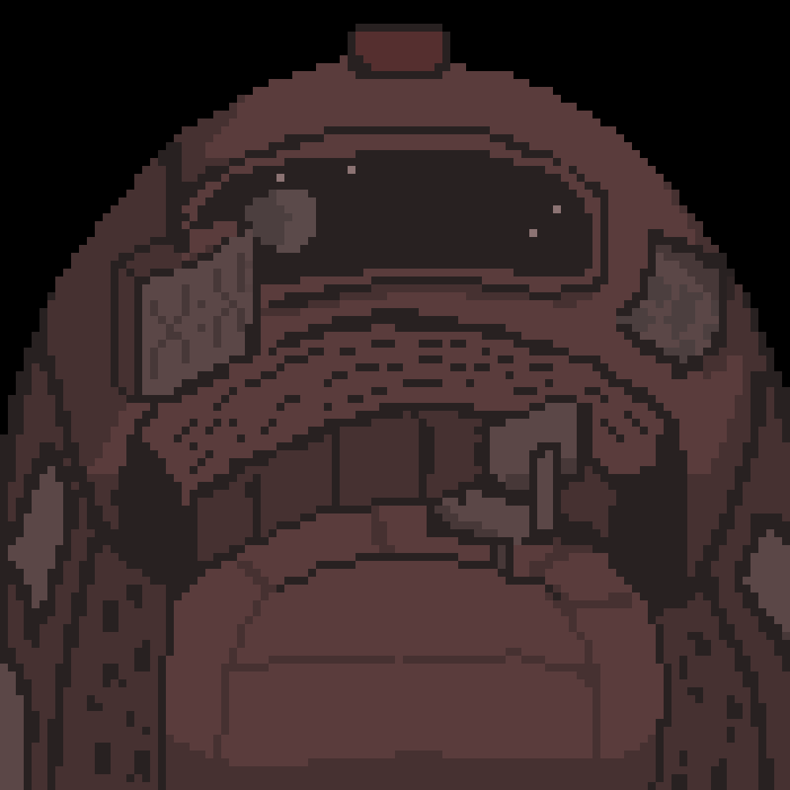
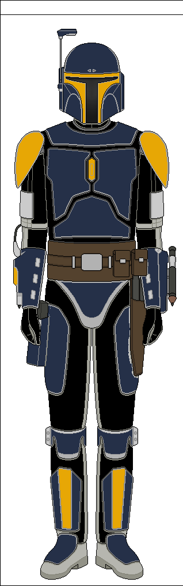
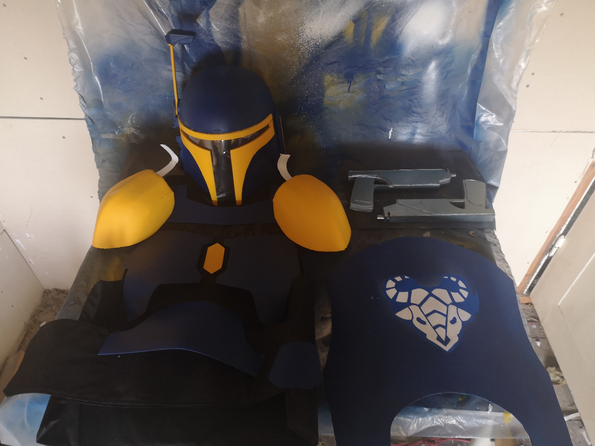
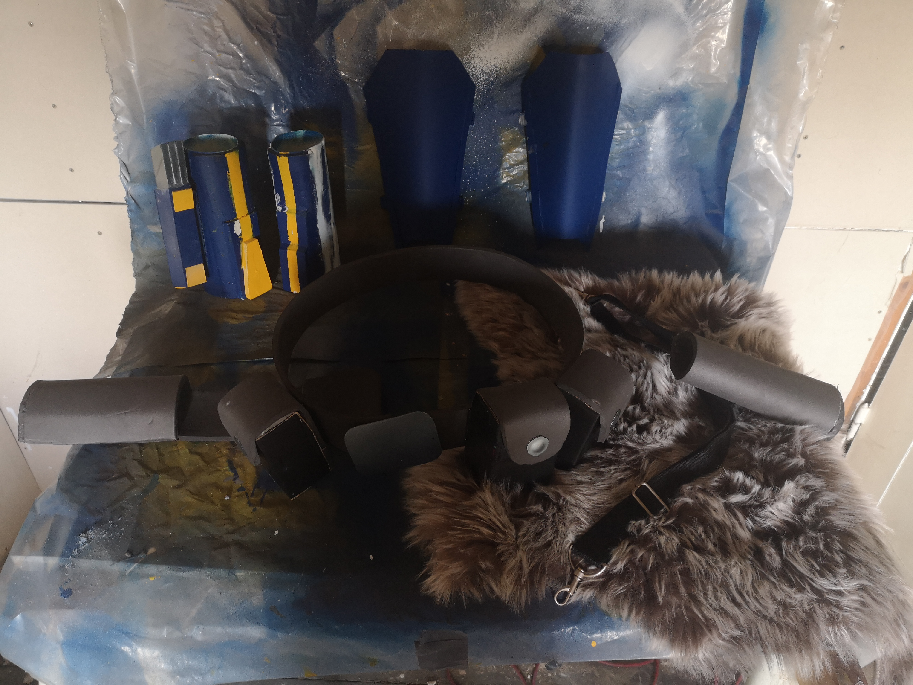
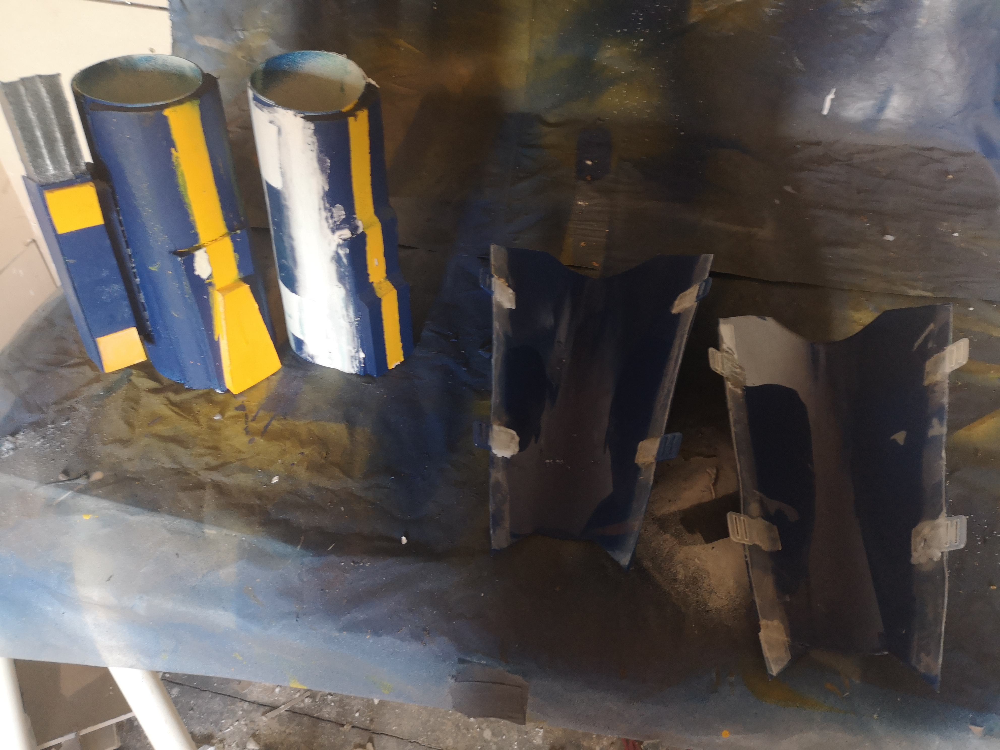
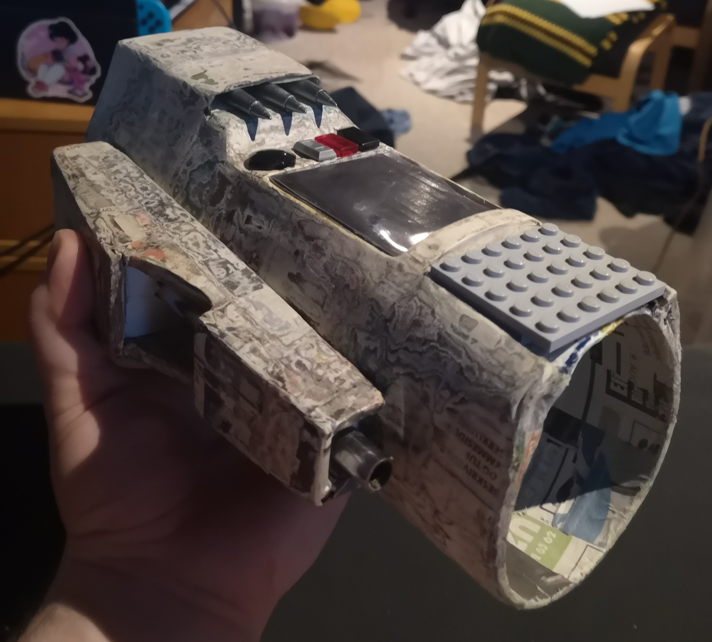

ZENCY MOCKUP
UX/UI • Figma • Meta Ads
Zency
Redesign af hjemmeside og optimering af annonceringsflow for øget konvertering.
Se case →MULTIMEDIEDESIGNER
Specialist i 3D-content, UX/UI og vinder af Game Jam. Jeg transformerer idéer til interaktive oplevelser.
Se udvalgte casesRedesign af hjemmeside og optimering af annonceringsflow for øget konvertering.
Se case →Vinderprojekt udviklet til Game Jam. Fokus på engagerende spilmekanik og brugerfastholdelse.
Se projekt →Interaktive løsninger og digitalt design til en af Danmarks førende dyreparker.
Se løsning →VIL DU SE MERE af det, jeg har lavet?
Strategisk design og datadrevne løsninger, der skaber synlig vækst og stærke visuelle identiteter.

This was made as a finals project at HTX mercantec, about Mens Mental health. Done in a collaboration with Mandecentret...
This was made as a finals project at HTX mercantec, about Mens Mental health. Done in a collaboration with Mandecentret...

E-mail marketing flows.
Visuel storytelling gennem dynamisk videoproduktion, lyddesign og motion graphics.
This is a little fan project edit for Lé College Noir, I feel people don't really talk about it and I hope this would help get some eyes on it. I think people that like Gravity Falls could enjoy it.
This was part of a project, where we needed to make a new game trailer, but with a twist: Instead of focusing on story, this focuses more on combat. For this I did all the editing and recording.

A podcast where I did most of the sound editing. The idea was to make a story podcast for 6-10 children that tells old folktales, but keeps the messed-up part in.
For the time being, there are only three episodes, plus two more of which are not being worked on, and it is only in Danish. Listen to the first episode 1 here.
Brugercentrerede digitale oplevelser, hvor funktionalitet og interaktion går hånd i hånd.

This was my submission to Viborg Game Jam at the Viborg Animation Festival 2025, where the judges picked it as the winners. I did some of the art and the sound.
Try it out
A Scandinavian zoo asked the small group to create a little game that could help visitors to the park learn about the animals.
Ours is a swipe game where you have to sort animal facts. Most of what I did here was UI design, such as animal icons and "beautification".
Min personlige legeplads for eksperimenter - her finder du alt fra 3D-print til illustrationer lavet i min fritid.
A Scandinavian zoo asked the small group to create a little game that could help visitors to the park learn about the animals.
A Scandinavian zoo asked the small group to create a little game that could help visitors to the park learn about the animals.

For a long time Boba Fett was my favorite character and wanted my own armor, but it wasn't until The Mandalorian-show where i decided to try and make my own cosplay, of an original design.
It been made from a lot of different materials and styles, materials like pvc, plastic, 3d print, cardboard and paper mache.




Uanset om jeg programmerer komplekse systemer, designer interfaces eller bygger en Mandalorian-rustning fra bunden, er mit fokus altid på finish og den ultimative brugeroplevelse.
Læs mere om mig →